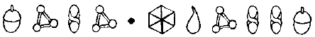
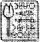

LOS ANGELES, A.B.D.
MULCH Diggums, şu anda Oskar ödüllü bir artistin evinin önündeydi. Tabii ki artist onun orada olduğundan habersizdi. Ye doğal olarak, bu işin sonu pek iyi görünmüyordu. Hırsız her zaman hırsızdı.
Mulch bu işi para için yapmıyordu. Artemis Fowl işinde çok para kazanmıştı. Hem de Beverly Hills’te kendine bir çatı katı kiralayacak kadar çok. Dairesini Pioneer marka bir müzik sistemi, binlerce DVD ve ömrünün sonuna kadar yetecek kadar biftekle doldurmuştu. Artık on yıl dinlenip yorgunluk atma zamanıydı.
Ama yaşam böyle değildir. Kıvrılıp bir köşede sessizce oturmanıza izin vermez. Yüzyılların alışkanlığı bir çırpıda geçmez. James Bond film serisinin ortalarına geldiğinde, Mulch eski kötü günlerini özlediğini fark etti. Kısa süre sonra, çatı katının her şeyden elini ayağını çekmiş kiracısı, gece yarısı gezintilerine çıkmaya başladı. Bu gezintiler genellikle, başka insanların evlerinde son buldu.
İlk başta Mulch sadece evleri ziyaret edip Çamur Adamların gelişmiş güvenlik sistemlerini mahvetmenin zevkine vardı. Sonra gittiği yerlerden hatıralar almaya başladı. Ufak tefek şeyler -kristal bir kadeh, bir küllük ya da eğer açsa bir kedi. Ama kısa süre sonra, Mulch Diggums kötü şöhretini geri kazanmak için can atmaya başladı ve çaldığı eşyaların nitelikleri arttı. Altın külçeler, kaz yumurtası büyüklüğünde elmaslar ya da gerçekten açlıktan ölüyorsa eğer, pitbul cinsi köpekler.
Oskar olayı kazara başlamıştı. New York’taki hafta arası hırsızlıklardan birinde meraktan bir ödül çalmıştı. Bu en iyi orijinal senaryo ödülüydü. Ertesi sabah ülkedeki tüm gazetelere manşet olmuştu. Sanki yaldızlı bir heykelciği değil de tıbbi bir konvoyu çaldığını sanırdınız. Tabii ki Mulch, zevkten dört köşeydi. Yeni gece eğlencesini bulmuştu.
Sonraki iki hafta içinde Mulch en iyi film müziği ve en iyi özel efekt Akademi Ödüllerini aşırdı. Dedikodu gazeteleri çılgına döndü. Hatta ona, çok ünlü bir başka Oskar’ın anısına, Grouch adını bile takmışlardı. Mulch bunu okuduğunda zevkten ayak parmaklarını oynatmaya başladı. Cücelerin ayak parmaklarını oynatışları görülmeye değerdir. Ayak parmakları, el parmakları kadar kıvrak ve çift eklemlidir. Ve kokusundan ne kadar az söz edersek, o kadar iyi olur. Mulch’ın işi belli olmuştu. Tüm seti tamamlamalıydı.
Sonraki altı ay boyunca, Grouch, Amerika’yı boydan boya gezdi. Hatta en iyi yabancı film ödülünü ele geçirmek için İtalya’ya bile gitti. Onlar için tek bir düğmeye dokunarak karartılabilen, renkli camlı, özel bir dolap bile yaptırttı. Mulch Diggums kendini yeniden doğmuş gibi hissediyordu.
Tabii ki gezegendeki tüm Oskar ödüllü sanatçılar güvenlik güçlerini üç kat arttırdılar. Mulch’ın istediği de buydu zaten. Plajdaki barakalardan birini soymanın hiçbir heyecan verici yanı yoktu. Halkın istediği yüksek kalite ve ileri teknolojiydi. Bu yüzden de Grouch onlara istediklerini veriyordu. Gazeteler onu yerlere göklere sığdıramıyorlardı. O bir kahraman olmuştu. Gündüzleri dışarı çıkmayı göze alamadığı zamanlarda, Mulch kendi kahramanlık senaryolarını kaleme almakla meşguldü.
Bu gece çok önemli bir geceydi. Son heykelciği çalacaktı: en iyi kadın oyuncu ödülünü. Üstelik bu herhangi bir yaşlı artistin ödülü değildi. Bu gecenin hedefi, Jamaikalı çekici sanatçı, Maggie V’ydi. Bir Jamaikalı güzel olan Precious tiplemesiyle bu yılki ödülün sahibi olmuştu. Maggie V herkesin önünde bir açıklamada bulunup Grouch dairesine girmeyi denerse, başına umduğundan çok daha kötü şeyler geleceğini söylemişti. Mulch böylesi bir meydan okumaya nasıl dayanabilirdi ki?
Binanın yerini saptamak kolay olmuştu; Sunset Bulvarının hemen sonunda, camdan ve demirden yapılmış on katlı bir binaydı. Hepsi hepsi Mulch’ın dairesinden güneye doğru bir gece yarısı gezintisiydi. Böylece, korkusuz cüce bulutlu bir gecede, araç gereçlerini toparlayıp hırsızlık yöntemi sayesinde tarih kitaplarına geçmeye hazırlandı.
Maggie V en üst katta oturuyordu. Merdivenlerden çıkmak söz konusu bile olamazdı, asansör ya da hava boşluğunu kullanacaktı. İş dışarıdan halledilmeliydi.
Mulch tırmanışa hazırlanmak için iki gün boyunca hiçbir şey içmemişti. Cücelerin gözenekleri yalnızca ter atmaya yaramaz, aynı zamanda nemi de içlerine çekerler. Çöken bir mağaranın içinde kapana kısılıp ölmek üzere olduğunuz durumlarda bu çok işe yarar. Ağzınızla bir şey içemeseniz de cildinizin her santimetrekaresi, çevrenizi saran toprağın içindeki suyu emebilir. Bir cüce şu an Mulch’ın susadığı gibi susadığında, gözenekleri birer topluiğne başı kadar açılır ve deli gibi emişe geçer. Bu, özelikle uzun bir binanın yan cephesinden tırmanmak zorunda olduğunuz zaman çok işe yarar.
Mulch ayakkabılarıyla eldivenlerini çıkardı ve çalıntı LEP miğferini takıp tırmanmaya başladı.
E93 ÇAVLANI
Holly ensesindeki saçları çekiştiren kumandanın öfkeli bakışlarım üzerinde hissedebiliyordu. Holly onu görmezden gelerek, Atlantis büyükelçisinin mekiğini Kuzey Kutbu çavlanının duvarlarına çarpmamaya özen gösterdi.
“Yani bunca zamandır, Mulch Diggums’ın hayatta olduğunu biliyordun?”
Holly yarı erimiş bir kayadan kurtulmak için mekiğin sancak tarafındaki idare roketini çalıştırdı. “Kesin olarak emin değildim. Bu yalnızca Foaly’nin öne sürdüğü bir kuramdı.” Yarbay hayali bir boynu hızla sıktı. “Foaly demek! Neden şaşırmadım, acaba?”
Artemis oturduğu yolcu koltuğundan sırıttı. “Siz ikiniz sakin olun, bundan böyle bir ekip çalışması yapmamız gerek.”
“Pekala, bana Foaly’nin kuramından söz et, Yüzbaşı,” diye emretti Root, kendini yardımcı pilot koltuğuna bağlayarak.
Holly mekiğin dış kameralarına statik bir durulama uyguladı. Pozitif ve negatif akımlar merceklerin üzerindeki toz tabakalarını kaldırdılar.
“Foaly, Mulch’ın, tünel kazma işindeki en iyi peri olduğunu bildiği için ölümünü biraz şüpheli bulmuştu.
“Öyleyse, neden bana söylemedi?”
“Bu yalnızca bir önseziydi. Sizin önseziler konusunda, neler düşündüğünüzü herkes bilir, Yarbay.”
Root isteksizce başını salladı. Doğruydu, önsezilerle kaybedecek zamanı yoktu. Elle tutulur bir kanıt buluncaya kadar ofisine girmenize izin vermezdi.
“Foaly boş zamanlarında biraz araştırma yaptı. İlk olarak, geri alman altının yükte birazcık hafiflemiş olduğunu farkına vardı. Ben fidyenin yarısının geri verilmesi konusunda pazarlık etmiştim, oysa Foaly’nin hesabına göre el arabasında yaklaşık iki düzine kadar külçe eksikti.”
Yarbay geleneksel mantar purolarından birini yaktı. Umut verici olduğunu itiraf etmeliydi: Mulch Diggums yüz millik bir alan içindeydi ve altınlar kayıptı. İki kere iki dört ederdi.
“Bildiğiniz gibi, fidye altını da dahil olmak üzere, LEP’e ait olan her şeye, iz sürücü solinyum spreyi sıkmak standart bir işlemdir. Bu yüzden Foaly, bir solinyum taraması yaptı ve Los Angeles’da yeni izler yakaladı. Özellikle de Beverly Hills’teki Crowley Otelinde. Foaly binanın bilgisayarına girdiğinde, çatı katında oturan kişinin, Lance Digger* adıyla kayıt yaptırmış olduğunu gördü.” Root’un sivri kulakları dikildi. “Digger mı?”
*Digger: Kazıcı demek. Mulch’un soyadı Diggums da kazmakla bağlantılı.
Aynen,” dedi Holly, başıyla onaylayarak. “Aşırı bir rastlantı. Bu noktada, Foaly bana geldi, ben de ona, dosyayı size götürmeden önce, uydudan fotoğraflar çekmesini önerdim. Yalnız...”
“Yalnız Bay Digger çok zor yakalanan biri. Haksız mıyım?”
“Kesinlikle.”
Root un rengi pembeden, domates kırmızısına döndü. Ah, Mulch, ah! Bunu nasıl yapabildi?”
Holly omuz ilkti. “İris kamerasını, vahşi bir hayvana, belki de bir tavşana takmış olabileceğinden kuşkulanıyoruz. Sonra da tüneli çökertti.”
“Öyleyse, ekrandan izlediğimiz yaşam belirtileri bir tavşana aitti.” .
“Aynen. Kuramsal olarak.”
Onu öldüreceğim,” diye bağırdı Root, kontrol panelini yumruklayarak. “Bu hurda yığını daha hızlı gidemez mi?”
LOS ANGELES
Mulch binaya fazla zorlanmadan tırmandı. Dışarıyı gözetleyen, kapalı devre kameralar vardı ama Mulch’ın miğferindeki iyon filtresi, kameraların nereye doğrultulmuş olduklarını tam olarak gösteriyordu. Kör noktalardan sürünerek geçmek kolay işti.
Bir saat içinde cüce, Maggie V’nin onuncu kattaki dairesinin dış cephesine vantuz gibi yapışmıştı. Camlar üç katlı kurşun geçirmez bir tabakayla sırlanmıştı. Ah şu film yıldızları. Hepsi de paranoyaktı.
Tabii ki pencerenin tepesinde bir alarm ve duvarda, donmuş bir cırcırböceği gibi sinmiş, bir hareket algılayıcısı vardı. Ondan da bu beklenirdi zaten.
Mulch maden ocaklarında elmasları temizlemekte kullanılan cüce taş cilasıyla, cama bir delik açtı. İnsanlar elmasları parlatmak için onları keserlerdi. Düşünsenize, taşın yarısı çöpe gidiyordu.
Sonra Grouch hareket algılayıcısının kapsama alanını belirlemek için miğferinin iyon filtresini kullanarak, odayı taradı. Kırmızı renkli iyon akımı, algılayıcının zemine odaklanmış olduğunu gösteriyordu. Bu önemli değildi. Mulch duvar boyunca ilerlemeyi amaçlıyordu.
Gözenekleri hâlâ susuzluktan kıvranan cüce, asıl oturma odasını boydan boya çevreleyen, paslanmaz çelik raf sisteminden elinden geldiğince yararlanarak, duvar boyunca emekledi.
Bir sonraki adım, gerçek Oskar’ı bulmaktı. Heykelcik, Maggie V’nin yastığının altı da dahil olmak üzere, her yere gizlenmiş olabilirdi ama aramaya başlamak için bu oda da en az öbür odalar kadar uygundu. Asla bilemezdiniz, şansı yaver gidebilirdi.
Mulch miğferinin X ışını filtresini çalıştırıp duvarlarda bir kasa taraması yaptı. Hiçbir şey yoktu. Zemini denedi; insanlar, son zamanlarda akıllanmışlardı. Orada sahte bir zebra postunun altında, metal, küp şeklinde bir kasa vardı. Bu, basit bir işti.
Grouch hareket algılayıcısına üstten yaklaşıp aygıtın gözü tavana gelinceye kadar, yavaşça çevirdi. Zemin artık güvendeydi.
Mulch postun üzerine uzanıp duyarlı ayak parmaklarıyla yüzeyini taradı. Postun astarına dikili, yumuşak basınç tabanları yoktu. Sahte postu geriye yuvarlayıp ahşap döşemenin içindeki kapağı ortaya çıkardı. Birleşme noktalarını çıplak gözle görmek neredeyse olanaksızdı. Ama Mulch bir uzmandı ve gözleri de çıplak değil, LEP’in zum mercekleriyle donatılmıştı.
Mulch yarığın içine tırnağını geçirip kapağı açtı. Kasa onu düş kırıklığına uğratmıştı. Kurşunla bile çevrili değildi; X ışını filtreleri sayesinde mekanizmanın içini doğrudan görebiliyordu. Bu basit bir şifreydi, sadece üç rakam.
Mulch filtreyi kapattı. İçi görünen bir kilidi kırmanın anlamı var mıydı? Onun yerine, kulağını kasanın kapısına dayayıp kadranı hafifçe oynattı. On beş saniye sonra kapı ayaklarının altında açılmıştı.
Oskar m altın kaplaması ona göz kırptı. Mulch tam o anda büyük bir yanlışlık yaptı. Gevşedi. Grouch hayalinde kendi dairesine dönmüş, iki litrelik buz gibi bir şişe suyu yudumluyordu. Oysa gevşeyen hırsızlar hapse düşmeye mahkûmdurlar.
Mulch tuzak olup olmadığına aldırmadan, heykelciği kasanın içinden çekip çıkarttı. Kontrol etmiş olsaydı, altında bir mıknatısla bağlanmış bir tel olduğunun farkına varırdı. Oskar yerinden oynatılınca, bir elektrik devresi ortalığı cehenneme çevirdi.
E93 ÇAVLANI
Holly yüzeyin üç yüz metre üzerinde, kendi çevresinde uçmak için otomatik pilotu devreye soktu. Göğsüne vurup emniyet kemerini açtı ve mekiğin arka tarafındakilere katıldı.
“İki sorun var. Birincisi, biraz daha aşağı inersek, tarayıcılara yakalanabiliriz, hâlâ devrede olduklarını varsayarsak tabii.”
“İkinciyi neden merak etmiyorum acaba?” dedi Kâhya.
“İkincisi, Kuzey Kutbundan çekildiğimizde, çavlanın bu bölümü kullanımdan kaldırılmıştı.
“Yani?”
“Yani, destek tünelleri yıkılmıştı. Ve bu tüneller olmadan, çavlan sistemine girmemize olanak yok.” “Sorun değil,” diye belirtti Root. ‘ Duvarı yıkarız. Holly iç geçirdi. “Neyle, Yarbay? Bu diplomatik bir gemi. İçinde hiç top yok.
Kâhya Aykemerinin ceplerinin birinden, iki sarsıntı yumurtası çıkarttı. “Bunlar işe yarar mı? Foaly yararı olabileceğini düşündü de.
Artemis inledi. Onu tanımasa hizmetkârın bu işten keyif aldığını düşünecekti.
LOS ANGELES
“Ah, of,” diye soludu Mulch.
Bir anda her şey toz pembeden, büyük bir tehlikeye dönüşmüştü. Güvenlik devresi çalışınca yandan bir kapı açılmış ve önünde iki kocaman Alman çoban köpeği belirmişti. Bunlar en iyi bekçi köpekleriydi. Arkalarından korumalı giysiler içindeki iri yarı bakıcıları gelmişti. Üzerine paspaslar geçirmiş gibiydi. Köpeklere güven olmuyordu, anlaşılan.
Tatlı köpecikler,” dedi Mulch, poposundaki kapağı yavaşça açarak.
E93 ÇAVLANI
Holly uçuş kontrollerini yapıp mekiği çavlanın duvarına yanaştırdı.
Bundan fazla yaklaşamayız,” dedi miğferinin mikrofonuna doğru. “Biraz daha yaklaşırsak, yükselen sıcak hava akımları bizi kayalara fırlatabilir.”
Yükselen sıcak hava akımları mı?” diye homurdandı Root. “Buna binmeden önce yükselen sıcak hava akımları ilgili hiçbir şey söylemedin.”
Yarbay iskele kanadında çizmelerinin içinde birer sarsıntı yumurtasıyla, kol ve bacaklarını yana açmış duruyordu.
“Affedersiniz, Yarbay, birinin bu kuşu uçurması gerekiyordu.”
Root ağzının içinde bir şeyler geveleyip kanadın ucuna doğru iyice yaklaştı. Hava boşlukları hareket eden bir uçaktaki kadar şiddetli olmasa da tokat gibi çarparak, yükselen sıcak hava akımları, kumandanı avuç içindeki bir zar gibi sallamaya yetiyordu. Dayanmasını sağlayan tek şey, Mulch Diggums’ın boynunu sıkan parmaklarının hayaliydi.
“Bir metre kaldı,” diye soludu mikrofona doğru. En azından bağlantıları kopmamıştı, mekiğin dahili bir iletişim sistemi vardı. “Bir metre daha gidebilirsem, başaracağım.
“Evet, Yarbay. Bu sizin şansınız.”
Root az daha uçuruma yuvarlanıyordu. Çavlan Dünya’nın merkezindeki turuncu renkteki magma kora kadar, sonsuzluğa doğru uzanıyordu. Bu yaptığı çılgınlıktı. Delilikti. Başka bir yolu olmalıydı. Bu noktada, kumandan yer üstüne bir uçuş denemesi tehlikesini bile göze alabilirdi.
Sonra Julius Root’un gözlerinin önünde bir imge belirdi. Kükürt dumanından kaynaklanıyor olabilirdi ya da stresten, hatta açlıktan. Ama kumandan, Mulch Diggums’ın kayaların içine oyulmuş yüz hatlarını gördüğüne yemin edebilirdi. Yüz puro içip sırıtıyordu.
Kararlılığı aniden geri geldi. Bir suçluya yenilmek ona göre değildi.
Root güçlükle ayağa kalkıp terli avuçlarını giysisine sildi. Yükselen sıcak hava akımları yaramaz hayaletler gibi kollarını ve bacaklarını çekiştiriyorlardı.
“Beni, az sonra deliğe dönüşecek bu şeyden biraz uzaklaştırmaya hazır mısın?” diye mikrofona bağırdı Root.
“Emin olabilirsiniz, Yarbay,” diye yanıt verdi Holly. “Sizi yeniden içeri alır almaz, buradan gidiyoruz.”
“Pekala. Beklemede kal.”
Root belindeki piton okunu ateşledi. Titanyum başlık kolayca kayanın içine gömüldü. Yarbay okun içindeki küçük patlayıcıların iki çıkıntıyı havaya uçurarak, onu yüzeyine kenetleyeceğini biliyordu. Ara beş metreydi. Bir piton ipini fırlatmak için fazla uzun bir mesafe değildi. Ama asıl önemli olan fırlatış değildi. Asıl önemli olan, kemik parçalayıcı düşüş ve çavlanın duvarında tutunacak bir yer olmamasıydı.
Hadi ama Julius diye kıs kıs güldü Mulch’ın portresi. Bakalım duvara yapışınca neye benzeyeceksin.
Kapa çeneni, mahkûm, diye kükredi kumandan. Ve boşluğun içinde sallanarak, atladı.
Kayalık yüzey ona ciğerlerindeki havayı çıkartarak, hızla çarptı. Root acıya dayanmak için arka dişlerini gıcırdattı. Bir yerinin kırılmamış olmasını ümit etti, çünkü Rusya yolculuğundan sonra, değil kırık bir kaburgayı iyileştirecek, bir papatyaya çiçek açtıracak kadar büyüsü bile kalmamıştı.
Mekiğin ön farları LEP tünel cücelerinin malzeme çavlanını mühürledikleri noktadaki lazer yanıklarına odaklandı. Aradaki kaynak çizgisi zayıf nokta olacaktı. Root sarsıntı yumurtalarını yarıkların içine soktu.
“Sana geliyorum, Diggums,” diye mırıldandı, yumurtaların içindeki patlayıcı kapsülü ezerek. Otuz saniye kalmıştı.
Root ikinci piton okunu mekiğin kanadına hedef aldı. Kolay bir atıştı, o böyle şeyleri uykusunda bile yapabilirdi. Ne yazık ki son anda simülatörlerin sıcak hava akımı karıştırıcıları açılmadı.
Yarbay okunu ateşler ateşlemez, çok güçlü bir gaz girdabı mekiğin arkasını sararak, onu saatin aksi yönünde kırk derecelik bir açıyla döndürdü. Ok bir metre farkla hedefi kaçırdı ve uçuruma doğru yuvarlanarak, kumandanın cankurtaran halatını de peşinden sürükledi. Root’un iki seçeneği vardı: kemerindeki vinci kullanarak, ipi geriye sarabilirdi, ya da pitonu atıp ondan kurtulabilir ve yedeğini kullanarak, atışı bir kez daha denerdi. Julius ipi çözdü; yeniden denemek daha hızlıydı. İyi bir plandı, tabii ki yedek pitonunu buzun altından kurtulmak için kullanmış olmasaydı. Kumandan bunu, son pitonunu kestikten yarım saniye sonra hatırladı.
“D’Arvit,” diye küfretti, orada olmadığını bildiği bir oku aramak için kemerini yoklarken.
“Bir sorun mu var, Yarbay?” diye sordu Holly. Mekiğin ayarlarıyla güreşmekten sesi güçlükle çıkıyordu.
“Hiç piton kalmadı ve patlayıcılar yerleştirildi.”
Sözlerini kısa bir sessiz izledi. Hem de çok kısa bir sessizlik. Uzun uzun düşünüp taşınacak zaman yoktu. Root aysaatine göz attı. Patlamaya yirmi beş saniye kalmıştı.
Holly’nin kulaklıktan gelen sesi heves ya da güven dolu değildi.
Şey... Yarbay. Üzerinizde metal bir şey var mı?” “Evet,” diye yanıt verdi Root, afallamış gibi. “Göğüs plakam, tokam, nişanlarım, silahım. Neden?”
Holly mekiği birazcık daha yanaştırdı. Bir adım daha yaklaşmak intihar olurdu.
“Şöyle söyleyeyim. Kaburgalarınıza ne kadar düşkünsünüz?”
“Neden?”
Sanırım sizi oradan nasıl kurtaracağımı biliyorum ” “Nasıl?”
“Söylerdim ama bunun pek hoşunuza gideceğini sanmam.”
“Söyle, Yüzbaşı. Bu kesin bir emirdir.”
Holly ona söyledi. Root’un hoşuna gitmedi.
LOS ANGELES
Cüce gazı üstünde konuşulacak en zevkli konulardan biri değildir; cüceler bile bu konudan söz etmekten hoşlanmazlar. Çok sayıda cüce eşinin, gazlarını tünelde değil de evde çıkarttıkları için kocalarını azarladıkları bilinir. Gerçek şudur ki genetik olarak, cüceler gaz çıkartmaya eğilimlidirler, özellikle de maden ocaklarında kil yemişlerse. Bir cüce çenesini saldıktan sonra, saniyede birkaç kilo çamur yutabilir. Bu da içinde çok fazla hava olan, çok fazla kil demektir. Tüm bu artıkların bir yere gitmesi gerekir. Bu yüzden güneye inerler. Nazikçe söylemek gerekir
se, tüneller kendi kendilerine kapanırlar. Mulch aylardır çok fazla kil yememişti ama gereksinim duyduğu anda çıkarılmak üzere, birkaç gaz kabarcığı vardı hâlâ.
Köpekler saldırıya hazırdı. Açık ağızlarından sicim gibi salyalar akıyordu. Onu parçalayacaklardı. Mulch düşüncelerini yoğunlaştırdı. Karnından alışılmış gurultular yükselmeye başlayınca, göbeğinin şekli değişti. Sanki birkaç gnome çöp güreşçisi, göbeğinin içinde güreşmeye başlamış gibiydi. Cüce dişlerini sıktı, büyük bir tane geliyordu.
Bakıcı bir futbol düdüğü öttürdü. Köpekler dişli torpiller gibi öne fırladılar. Mulch zebra postunu delip bedenini tavana savuran bir gaz dalgası koyuverdi, susuzluktan kıvranan gözenekleri onu tavana demirledi. Güvendeydi. Yani bir süre için.
Alman çoban köpekleri çok şaşırmışlardı. Şu ana kadar, yiyecek zincirindeki yaratıkların çoğunun tadına bakmışlardı. Bu yeni bir şeydi. Ve pek de hoş değildi. Köpeklerin burunlarının, insanlarınkinden çok daha duyarlı olduğunu unutmayın.
Bakıcı düdüğünü birkaç kez daha öttürdü ama Mulch geri dönüştürülmüş bir rüzgâra kapılıp havaya uçtuğu sırada olayın tüm kontrolünü yitirmişti. Köpeklerin burun delikleri açılınca, yerlerinde zıplayıp dişlerini hiç durmadan gıcırdatmaya başladılar.
Mulch yutkundu. Köpekler sıradan bir goblinden daha zekidirler. Mobilyalara tırmanarak, sıçramayı düşünmeleri an meselesiydi.
Mulch pencereye yöneldi ama bakıcı camın önünde durmuş, koruyucularla kaplı bedeniyle deliğin önünü tıkamıştı. Mulch bakıcının belindeki silaha uzandığını fark etti. İş ciddileşiyordu. Cüceler pek çok özelliğe sahiptirler ama kurşun geçirmezlik bunlardan biri değildir.
Üstüne üstlük, Maggie V krom bir beysbol sopası sallayarak, yatak odasının kapısında belirmişti. Yüzünde yeşil bir maske vardı ve gözlerinin altında birer çay poşeti yapıştırılmış gibiydi.
“Artık elimizdesin, Bay Grouch. Ve emiş yastıkların bu kez seni kurtaramayacak.”
Mulch, Grouch kariyerinin sona erdiğini fark etti. Kaçmayı başarsa da, başaramasa da, Los Angeles Polis Teşkilatı sabah olmadan şehirdeki tüm cüceleri ziyaret edecekti.
Mulch’ın elinde son bir koz kalmıştı. Dil yetisi. Her dilin kökeninde Gnomeca yattığı için tüm perilerin diller konusunda doğal bir yetenekleri vardı, derin araştırmalar bunu kanıtlamıştı. Amerikan Köpek dili de buna dahildir.
“Hav,” diye hırladı Mulch. “Hav, hırrrr, hırrr.”
Köpekler donakaldılar. Biri tam sıçrarken havada donup öbürünün üzerine düştü. Bir süre birbirlerinin kuyruklarını ısırdılar, sonra da onlara havlayan, tavana yapışık bir yaratık olduğunu anımsadılar. Vurgusu bir felaketti, orta-Avrupa aksam. Ama sonuçta Köpekçeydi.
“Haaav?” diye sordu bir numaralı köpek. “Ne diyosun?”
Mulch bakıcıyı işaret etti. “Hırr, haaav. hav! Bu insanın gömleğinin içinde kocaman bir kemik var, diye homurdandı. (Açıkçası, bu bölüm tercüme edildi.)
Birden Alman çoban köpekleri bakıcıya saldırdı, Mulch penceredeki delikten kaçtı. Maggie V öylesine çok bağırdı ki güzellik maskesi çatladı ve çay poşetleri düştü. Her ne kadar Grouch, kariyerindeki bu özel sayfanın kapandığını biliyorsa da Maggie V’nin Akademi Ödülünün gömleğinin içindeki ağırlığı, ona büyük bir zevk veriyordu.
E93 ÇAVLANI
Patlamaya yalnızca yirmi saniye kalmıştı ve kumandan hâlâ çavlanın duvarına yaslanmış duruyordu. Yedek kanat takımları yoktu, olsa bile onları dışarı çıkarmaya zamanı yoktu. Root’u hemen şimdi oradan çekip kurtaramazlarsa, duvarla birlikte havaya uçup uçurumdan aşağı yuvarlanacaktı. Ve büyü eriyiklere etki etmezdi. Tek bir seçenek vardı. Holly kavrama kıskaçlarını kullanmak zorundaydı.
Her mekikte yedek bir iniş takımı bulunurdu. İskele düğümleri işe yaramazsa, gizli deliklerden dört mıknatıslı kavrama kıskacı fırlatılabilirdi. Bu kıskaçlar iniş iskelesinin alt tarafındaki metal tabana kenetlenip mekiği hava valfına sararlardı. Kavrayıcılar mıknatısların küçük kalıntılarını bulup onlara sülük gibi yapıştıkları, farklı ortamlarda da işe yarardı.
“Pekala, Julius,” dedi Holly. “Tek bir kasını bile kıpırdatma.”
Root’un beti benzi attı. Julius. Holly onu Julius diye çağırmıştı. Bu iyi değildi.
On saniye.
Holly ufacık bir ekran indirdi. “İskele kıskacını serbest bırak.”
Kulak tırmalayıcı bir ses kıskacın salıverildiğini işaret etti.
Ekranda kumandanın görüntüsü belirdi. Telaşı ekrandan bile fark ediliyordu. Holly kumandanın göğsünün ortasına bir artı işareti çizdi.
“Yüzbaşı Short. Bundan kesinlikle emin misin?”
Holly amirini duymazdan geldi. “Uzaklık on beş metre. Yalnızca mıknatıslar.”
“Holly atlayabilirim belki. Yapabilirim. Yapabileceğime eminim.”
Beş saniye...
“İskele kıskacını ateşle.”
Kıskacın altındaki altı küçük patlayıcı tutuştu ve ardından geri sarılabilir, uzun polimer kablolar sürükleyerek, metal tabanı yuvasından dışarı fırlattı.
Root küfür etmek için ağzını açtı, ardından kıskaçlar büyük bir hızla göğsüne çarpıp bedenindeki tüm havayı boşalttı. Bir yerleri çatlamış olmalıydı.
“Geriye sar,” diye tısladı bilgisayarın mikrofonuna Holly, bir yandan da çavlanı tarıyordu. Yarbay inanılmaz bir sörfçü gibi geriye doğru sürükleniyordu.
Sıfır saniye. Patlayıcılar havaya uçup iki bin kilo molozu boşluğa savurdu. Magma okyanusunun içinde bir damla.
Bir dakika sonra kumandan Atlantis büyükelçisinin revirindeki bir sedyeye bağlanmıştı. Soluk almak bile ona acı veriyordu ama bu konuşmasını engellemeyecekti.
“Yüzbaşı Short!” dedi kulak tırmalayan bir sesle. “Aklından hangi kahrolası düşünce geçiyordu? Ölebilirdim.” Kâhya meydana yaralara bakmak için Root’un parkasını yırttı. “Ölebilirdiniz. Beş saniye daha kalsaydınız hamura dönüşecektiniz. Holly sayesinde hayattasınız.” Holly fazla hareket etmeden uçmak için mekiği otomatik pilota bağladı ve ilk yardım kutusundan bir tıbbikompres aldı. Kompresi parmaklarının arasında sıkıştırarak, kristalleri harekete geçirdi. Foaly’nin icatlarından biri daha. Buz kompreslerine, iyileştirici kristaller aşılanmıştı. Büyünün yerini tutamazdı ama yarayı öpüp koklamaktan iyiydi.
“Neresi acıyor?”
Root öksürdü. Üniformasına birkaç damla kan sıçradı. “Genel olarak beden bölgesi. Birkaç kaburga kırık.” Holly dudağını kemirdi. Doktor değildi ama iyileştirmenin kesinlikle otomatik yapılacak bir iş olmadığını biliyordu. İşler ters gidebilirdi. Holly bir zamanlar, bacağı kırılan ve bu yüzden ölen bir ön-yüzbaşı tanıyordu. Uyandığında ayağı ters dönmüştü. Aslında Holly önceden de ustalık gerektiren ameliyatlar yapmıştı. Artemis annesinin ruhsal bunalımını iyileştirmesini istediğinde, farklı bir zaman dilimindeydi. Holly birkaç gün süreyle çevrede başıboş kıvılcımlar bırakacak kadar güçlü bir pozitif işaret göndermişti. Genel bir “beni iyileştir” türünde bir şey. Fowl Malikânesini ertesi hafta ziyaret edenler bile, ıslık çalarak evlerine dönmüş olmalıydılar.
“Holly,” diye inledi Root.
“Pe-pekala,” diye kekeledi Holly. “Pekala.”
Ellerini Root’un göğsüne koyup büyünün parmaklarına doluşmasını sağladı. “İyileştir,” diye soludu.
Kumandanın gözleri devrildi. Büyü onu iyileştirmek için kendinden geçirmişti. Holly baygın yatan LEP subayının göğsüne bir tıbbi-kompres uyguladı.
“Tut şunu,” dedi Artemis’e. “Yalnızca on dakika. Yoksa dokuda hasar meydana gelir.”
Artemis kompresi bastırdı. Kısa sürede parmakları bir kan gölüne gömüldü. Birden zekice bir yorumda bulunma isteği kaçtı. Önce fiziksel alıştırma ardından bedensel zarar. Şimdi de bu. Bu son günler kendisi için oldukça eğitsel olmuştu. Neredeyse St Bartelby’de olmayı yeğleyecekti.
Holly hızla pilot kabinine dönüp dış kameraları malzeme tüneline doğru çevirdi.
Kâhya yardımcı pilot koltuğuna sığışmaya çalıştı. “Pekala?” diye sordu. “Elimizde ne var?”
Holly sırıttı. Ve hizmetkâr onun yüz ifadesini bir an için Artemis Fowl’e benzetti. “Büyük bir deliğimiz var.” “İyi. Öyleyse gidip eski bir dostumuzu ziyaret edelim.”
Holly’nin başparmakları fırlatıcıların üzerinde gezindi. “Evet,” dedi. “Hadi.”
Atlantis mekiği Foaly’nin boğazından geçen bir havuçtan bile daha büyük bir hızla malzeme tünelinin içinde gözden kayboldu. Ve bilmeyenler için bu oldukça hızlı sayılırdı.
CROWLEY OTELİ, BEVERLY HİLLS, LOS ANGELES
Mulch izlenilmeden oteline geri dönmeyi başardı. Tabii ki bu kez duvarlardan tırmanmak zorunda değildi. Buraya tırmanmak Maggie V’nin binasından çok daha güç olurdu. Buradaki duvarlar tuğladandı ve çok gözenekliydiler. Parmakları taşın nemini içine çeker ve emiş güçlerini yitirirlerdi.
Hayır, Mulch bu kez ana girişi kullandı. Neden kullanmasın ki? Nasıl olsa kapıcı onu, içine kapanık milyoner Lance Digger olarak tanıyordu. Kısa olabilirdi. Ama kısa ve zengindi.
“İyi akşamlar, Art,” diye selamladı kapıcıyı Mulch, asansöre doğru ilerlerken.
Art mermer resepsiyonun üzerinden ona dikkatlice baktı.
“Ah, Bay Digger, sizsiniz,” dedi biraz şaşırmışça. “Birkaç saniye önce, önümden geçtiğinizi sandım.” “Hayır,” dedi sırıtarak Mulch. “Bu akşam ilk kez geliyorum.”
“Hımm. Gece esintisiydi belki de.”
“Olabilir. Binadaki delikleri kapatmadılar ki hâlâ. Üstelik ödediğim bu kiraya rağmen.”
“Kesinlikle haklısınız,” diye ona katıldı Art. Kiracılarla her zaman iyi geçinmek, şirket politikasıydı.
Mulch aynalı asansöre binice, çatı katma çıkmak için teleskopik bir işaret değneğiyle “Ç” düğmesine bastı. İlk birkaç ay, düğmeye basmak için zıplayıp durmuştu ama bu bir milyarder için ağırbaşlı bir davranış sayılmazdı. Ve üstelik Art’ın sıçrayışlarını, oturduğu yerde duyabileceğinden de emindi.
Aynalı kutu sessizce hareket edip çatı katma gitmek üzere öbür katlardan geçti. Mulch, Akademi Ödülünü çantasından bir an önce çıkartma arzusunu bastırmaya çalıştı. Asansöre biri binebilirdi. Onun yerine, saf peri suyuna olabildiğince yakın İrlanda kaynak suyuyla dolu bir şişeden uzun bir yudum aldı. Oskar heykelciğini yerine yerleştirir yerleştirmez, soğuk bir banyo yapıp gözeneklerini ıslatacaktı. Aksi halde ertesi sabah yatağa yapışmış olarak uyanabilirdi.
Mulch m kapısı şifreliydi, on dört rakamdan oluşan bir dizi. Hapisten uzak durmak için en iyi yöntem biraz paranoyak olmaktı. LEP öldüğüne inanıyor olsa da günün birinde Julius Root’un her şeyi anlayıp onu aramaya geleceği düşüncesi, Mulch’ın aklından bir türlü çıkmıyordu.
Dairesinin dekorasyonu insanların evlerine göre oldukça sıra dışıydı. Büyük oranda kil, kaya parçaları ve su ön plandaydı. Seçkin bir Beverly Hills dairesinden çok, bir mağaranın içini andırıyordu.
Kuzeye bakan duvar tek parçadan oluşan siyah bir mermermiş gibi görünüyordu. Gibi görünüyordu ama daha yakından incelendiğinde bunun yüz ekran, düz-kare bir televizyon, ince uzun bir DVD ve renkli bir cam panel olduğu anlaşılıyordu. Mulch bacağından daha büyük, bir uzaktan kumandayı güçlükle kaldırıp bir başka karmaşık kod girerek, gizli dolabın kapağını açtı. Dolabın içinde üç raf dolusu Oskar vardı. Mulch, Maggie V’nin ödülünü önceden hazırladığı, kadife bir yastığın üzerine yerleştirdi.
Gözünün kenarındaki hayali gözyaşını elinin tersiyle sildi. “Akademiye teşekkür etmek istiyorum,” diye kıkırdadı.
“Çok dokunaklı,” dedi arkasından gelen bir ses.
Mulch dolabın kapısını öylesine hızla çarptı ki cam paneli çatlattı.
Taşların arkasında bir erkek çocuk duruyordu. Onun dairesinde! Çocuğun garip bir görünüşü vardı, Çamur Adam standartlarına göre bile. Aşırı solgundu, kuzguni siyah saçları, narin hatları vardı. Ve kıtalar arasında sürüklenmiş gibi görünen bir okul forması giyiyordu.
Mulch’ın çene kılları dikleşti. Bu çocuk başına dert açacaktı. Cüce kılları asla yanılmazdı.
“Alarmın eğlenceliydi,” diye konuşmasını sürdürdü çocuk. “Onu atlatmam, birkaç saniyemi aldı.”
Mulch o anda başının belada olduğunu anladı. İnsan polisler dairelere zorla girmezlerdi.
“Kimsin sen, ins... çocuk?
“Burada asıl sorulması gereken, senin kim olduğun? İçine kapanık milyoner Lance Digger mı? Adı çıkmış Grouch mı? Yoksa, Foaly’nin tahmin ettiği gibi, kaçak mahkûm Mulch Diggums mı?”
Mulch koşmaya başladı, içindeki son gaz kalıntıları sayesinde hızlı hareket edebiliyordu. Bu Çamur Çocuğun kim olduğu hakkında hiçbir fikri yoktu ama eğer onu Foaly göndermişse, iki türden biri için çalışan bir mükafat avcısı olmalıydı.
Cüce suya gömülmüş oturma odasına doğru koşarak, bir kaçış yolu bulmayı denedi. Bu binayı seçmiş olmasının nedeni buydu. On dokuzuncu yüzyılın başlarında, bu yüksek binanın içinden geniş delikli bir baca geçiyordu. Ellili yıllarda merkezi bir ısıtma sistemi kurulduğunda, müteahhit hava deliğini yalnızca toprakla doldurup üzerini betonla örtmüştü. Emlakçı giriş kapısını açar açmaz, Mulch toprağın kokusunu almıştı. Betonu kazıyıp eski şömineyi açığa çıkarmak, kolay olmuştu. Voila*. Hemen kullanıma hazır bir tünel.
*Voilâ: Fransızca işte.
Mulch koşarken bir yandan da poposundaki kapağı açtı. Garip çocuk peşinden koşma girişiminde bulunmadı. Neden koşsun ki? Nasıl olsa gidecek yeri yoktu.
Cüce veda etmek için bir saniyesini ayırdı. “Beni asla canlı ele geçiremeyeceksin, insan. Foaly’ye söyle, perilerin işlerini halletmek için bana Çamur Adamlar göndermesin.” Oh Tanrım, diye düşündü Artemis, elini alnına götürüp. Hollywood tüm bunların hesabını vermek zorunda kalacaktı.
Mulch şöminenin önündeki, kurumuş çiçeklerle dolu bir sepeti kenara itip içeri daldı. Çenesini saldı ve yüz yıllık kilin içinde bir anda kayboldu. Toprak damak tadına pek uygun değildi. İçindeki mineraller ve besinler uzun süre önce kurumuştu. Onun yerine, toprak yüz yıllık yanık süprüntüler ve tütün külleriyle doluydu. Ama ne de olsa kildi ve cüceler bu iş için dünyaya gelmişlerdi. Mulch endişesinin yavaş yavaş uçup gittiğini hissetti. Artık onu yakalayabilecek hiçbir canlı yaratık yoktu. Bu onun alanıydı.
Cüce hızla aşağı inip killeri yutarak, katlar arasında kendine yol açtı. Geçtiği yerlerde, birden fazla duvar çöktü. Mulch parayı almak için çevrede dolaşacak olsa da ev için verdiği depozitonun kendisine iade edilmeyeceğini biliyordu.
Bir dakikadan birazcık fazla bir süre sonra, Mulch bodrum katındaki otoparka vardı. Çenesini yerine taktı, içinde hiç gaz kabarcığı kalmasın diye poposunu salladı, sonra da demir parmaklıklı kapıya doğru yuvarlandı. Özel olarak kendisine göre yapılmış, dört çekerli aracı onu bekliyordu. Deposu dolu, karartılmış ve yola çıkmaya hazır bir durumdaydı. "Enayiler, dedi şeytanca bir zevkle cüce, boynundaki zincire asılı araba anahtarını ararken.
Sonra bir metre uzağında Yüzbaşı Holly Short belirdi. “Enayiler mi?” dedi vızıltı değneğini çalıştırarak.
Mulch seçeneklerini gözden geçirdi. Bodrum katı asfaltlıydı. Asfalt cüceler için ölüm demekti, iç organlarını zamk gibi birbirlerine yapıştırırdı. Bodrum rampasını tıkayan dağa benzer biri vardı. Mulch onu daha önce Fowl Malikânesinde de görmüştü. Demek ki yukarıdaki insan, kötülüğüyle ün salmış Artemis Fowl’du. Yüzbaşı Short acımasız gözlerle dosdoğru kendisine bakıyordu. Tek bir kaçar yol vardı. Bacaya geri dönüş. Birkaç kat tırmanıp bir başkasının dairesine gizlenmek.
Holly sırıttı. “Devam et, Mulch. Hadi bakalım.”
Ve Mulch devam etti, dönüp hızla bacanın içine daldı ve arkasından şiddetli bir sarsıntının gelmesini bekledi. Düş kırıklığına uğramadı* Holly böylesi bir hedefi nasıl kaçırabilirdi?
E116 ÇAVLANI, LOS ANGELES'IN ALTI
Los Angeles mekik terminali, şehrin on altı mil güneyinde, üç boyutlu bir kum tepeciği görüntüsünün altında gizliydi. Root onları mekiğin içinde bekliyordu. Ancak hafifçe sırıtabilecek kadar iyileşmişti.
“Bak, bak, bak,” diye homurdandı, sedyeden kalkmaya çalışarak, kaburgalarının üzerine yeni bir tıbbi-kompres yapıştırılmıştı. “Bu karşımdaki ölümden dönen, benim en sevdiğim kötü adamım olmasın sakın.”
Mulch, Atlantis büyükelçisinin özel soğutucusundan bir kavanoz kalamar ezmesi aldı.
Bunca zaman neden bir teşekkür ziyaretine gelmedin, Julius? Ne de olsa, İrlanda’dayken kariyerini kurtarmıştım. Ben olmasaydım, Fowl’un Kitabın bir kopyasına sahip olduğunu asla öğrenemezdin.”
Root öfkeli olduğunda ki şu an öyleydi, yanaklarında ekmek kızartabilirdiniz.
“Bir anlaşmamız vardı, mahkûm. Ona uymadın. Ve şimdi seni içeri tıkacağım.”
Mulch tıknaz parmaklarını kepçe gibi kullanarak kalamar kavanozuna daldırdı.
“Biraz kara böcek şurubu ekleyebilirlerdi,” diye önerdi.
“Zamanın varken tadını çıkart, Diggums. Çünkü bir sonraki yemeğin hücrenin altındaki delikten içeri itilecek.”
Cüce yumuşak bir koltuğa kuruldu. “Rahatmış.
“Bence de” diye onayladı Artemis. “Bir tür sıvı süspansiyon. Pahalı olmalı, buna hiç kuşkum yok.
“Hapishane mekiklerinden iyi olduğu kesin, diye ona katıldı Mulch. “Hatırlıyorum da bir keresinde bir Teksaslı’ya bir Van Gogh satarken yakalanmıştım. Beni fare deliği boyunda bir mekikle götürmüşlerdi. Yan bölmede de bir troll vardı. Leş gibi kokuyordu.”
Holly sırıttı. “Troll da senin için aynı şeyi söylemişti.” Root kışkırtıldığının farkındaydı ama yine de tepesi attı. “Dinle beni, mahkûm. Bunca yolu senin kahramanlık öykülerini dinlemek için gelmedim. Bu yüzden, ben çeneni kapamadan önce sen kapa.”
Mulch bu ani patlamadan etkilenmemişti. “Yalnızca meraktan soruyorum, Julius, bunca yolu niye geldin? Büyük Yarbay Root, büyükelçinin mekiğine yalnızca benim gibi değersiz birini tutuklamak için mi el koydu? Sanmam. Öyleyse neler oluyor? Ve bu Çamur Adamların burada işleri ne?” Başıyla, Kâhya’yı işaret etti. “Özellikle de bunun.”
Hizmetkâr sırıttı. “Beni hatırladın mı, küçük adam? Sana bir borcum varmış gibi geliyor.”
Mulch yutkundu. Kâhya ile daha önce de atışmıştı. Bu insan için iyi sonuçlanmamıştı. Mulch cüce gazıyla dolu bağırsaklarını, doğrudan hizmetkârın üzerine üfürmüştü. Onun konumundaki bir koruma için bu, çok utanç verici, bir o kadar da acı veren bir olaydı.
Kaburgaları gerilse de Root ilk kez kıkırdadı. “Pekala, Mulch. Haklısın. Bir şeyler oluyor. Önemli bir şeyler.” “Ben de öyle düşünmüştüm. Ve her zaman olduğu gibi, pis işlerinizi halletmem için bana ihtiyacınız var.” Mulch kalçasını sıvazladı. “Bana saldırarak bir yere varamazsınız. Beni bu denli şiddetli vızıldatmak zorunda değildin, Yüzbaşı. İzi kalacak.”
Holly, Mulch’ı sivri kulağından çekiştirdi. “Hey, Mulch, gerçekten dikkatle dinlersen burada hiç kimsenin dalga geçmediğini anlarsın. Gördüğüm kadarıyla, LEP’in altınlarıyla oldukça iyi bir yaşam sürüyordun.”
“Daire bana çok pahalıya mal oldu, biliyorsun. Yalnızca depozitosu senin dört yıllık maaşın eder. Manzarayı gördün mü? Bir zamanlar bir film yönetmenine aitmiş . ”
Holly tek kaşını kaldırdı. “Paranın yararlı bir amaç uğruna harcandığını görmek ne güzel. Tanrı korusun, onu çarçur da edebilirdin.”
Mulch omuz silkti. “Hey, ben bir hırsızım. Ne umuyordun ki -bir bakımevi açmamı mı?”
“Hayır, Mulch, belki komik gelecek ama bunu tek bir saniye bile düşünmedim.”
Artemis boğazını temizledi. “Bu toplantı gerçekten de çok dokunaklı. Ama siz karşılıklı şakalar yaparken, babam Kuzey Kutbunda donuyor.”
Cüce giysisinin fermuarını çekti. “Babası mı? Artemis Fowl’un babasını mı kurtarmamı istiyorsunuz? Kuzey Kutbundan mı?” Sesi gerçekten korku doluydu. Cüceler buzdan, en az ateşten nefret ettikleri kadar, nefret ederlerdi.
Root başını salladı. “Bu kadar basit olmasını isterdim ve birkaç dakika sonra sen de aynı şeyi isteyeceksin.” Mulch’ın sakalının kılları, korkudan kıvrıldı. Ve büyükannesinin her zaman dediği gibi, kıllara güven Mulch, kıllara güven.